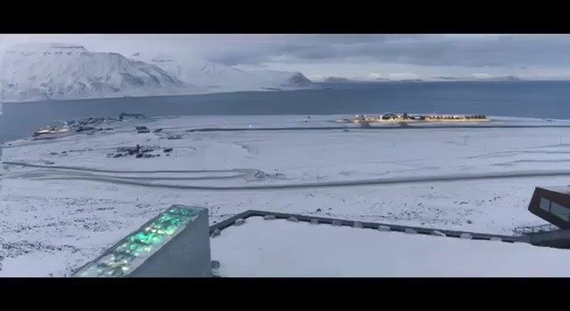

才一千年……如果恐龙埋了他们的开源软件，我们就看不到了 //@cnsimon9://@程序员邹欣: //@甄心cherish:🐂🍺 我的代码要去北极了！//@响马:流弊！会有我的名字！@ruanyf:GitHub 宣布，为了把开源软件留给子孙后代，将在2020年2月2日为所有公共存储库生成快照，然后保存在北极一个地下250米的废弃煤矿。快照储存在一种特殊胶片上，寿命高达1000年。它在 Youtube 上面放出了一段现场视频，简直就像科幻电视剧一样。 ruanyf的微博视频  169万次播放 01:29